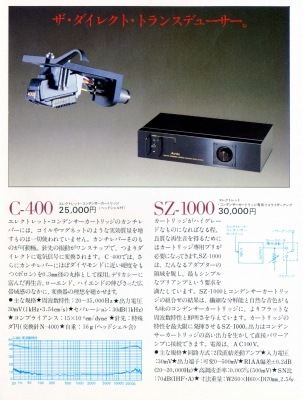
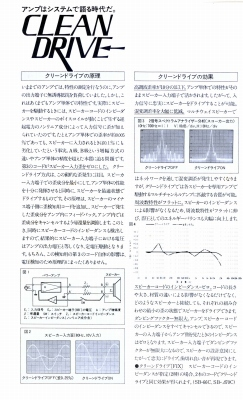
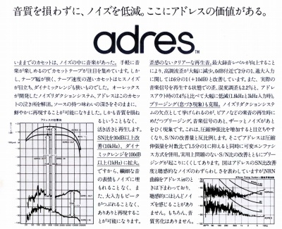

オーレックス カタログギャラリー
(カタログ画像をクリックすると原寸大のPDFファイルが開きます）
�@1976年5月ヘッドフォンカタログ
バックエレクレット・コンデンサー型時代のカタログ。この当時は全モデルが「エレクレット・コンデンサー型」。
�A1976年10月ヘッドフォンカタログ
通常型のモデルが加わり、「エレクレット・コンデンサー」の文字が消えた。
�B1978年7月アクセサリーカタログ
コンプリメンタリー・バックエレクレット・コンデンサー型時代のカタログ。

（当時はコンデンサー型カートリッジまで手を広げていた）
�C1977年10月ELECTRET CONDENSER PRODUCTS
エレクレット型のヘッドフォン・マイク・カートリッジカタログ。実際には非エレクレット型の製品も載っている。
�DHR-1000広報資料
�E1981年10月総合カタログ
エレクレット・コンデンサー型末期のカタログ。

（当時オーレックスがアンプで推進していたクリーンドライブ）

（オーレックスが開発のノイズ・リダクションシステム「ａｄｒｅｓ（アドレス）」）